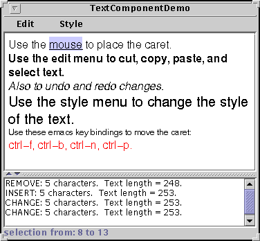

Feedback Form
|
|
Start of Tutorial > Start of Trail > Start of Lesson |
Search
Feedback Form |
JTextComponentis the foundation for Swing's text components, and provides these customizable features for all of its descendants:
This section uses the application shown below to explore each of these capabilities. Although the demo application contains a customized instance of
- A separate model, known as a document, to manage the component's content.
- A separate view, which is in charge of displaying the component on screen.
- A separate controller, known as an editor kit, that can read and write text and that implements editing capabilities with actions
.
- Customizable keymaps and key bindings.
- Support for infinite undo and redo.
- Pluggable caret and support for caret change listeners.
JTextPane, the capabilities discussed in this section are inherited by all ofJTextComponent's subclasses. The upper text component is the customized text pane. The lower text component is an instance ofJTextArea, which serves as a log that reports all changes made to the contents of the text pane. The status line at the bottom of the window reports either the location of the selection or the position of the caret, depending on whether text is selected.Using this example application as a reference point, this section covers these topics:
Try this:
- Compile and run the application. The source is in
TextComponentDemo.javaand
LimitedStyledDocument.java
See Getting Started with Swing if you need help compiling or running this application.- Use the mouse to select text and place the cursor in the text pane. Information about the selection and cursor is displayed at the bottom of the window.
- Enter text by typing at the keyboard. You can move the caret around using four emacs key bindings:
CTRL-B(backward one character),CTRL-F(forward one character),CTRL-N(down one line), andCTRL-P(up one line).- Bring up the Edit menu, and use its various menu items to perform editing on the text in the text pane. Make a selection in the text area at the bottom of the window. Because the text area is uneditable, only some of the Edit menu's commands, like copy-to-clipboard, work. It's important to note, though, that the menu operates on both text components.
- Use the items in the Style menu to apply different styles to the text in the text pane.
Like other Swing components, a text component separates its data (known as the model) from its view of the data. If you are not yet familiar with the model-view split used by Swing components, refer to Separate Data and State Models.A text component's model is known as a document and is an instance of a class that implements the
DocumentThe Swing text package contains a subinterface of
- Contains the text. A document stores the textual content in
Elementobjects, which can represent any logical text structure, such as paragraphs, text runs that share styles, and so on. We do not coverElements. However, The Swing Connection has at least one article on the subject.- Provides support for editing the text through the
removeandinsertStringmethods.- Notifies document listeners and undoable edit listeners of changes to the text.
- Manages
Positionobjects, which track a particular location within the text even as the text is modified.- Allows you to get information about the text, such as its length, and segments of the text as a string.
Document,StyledDocumentJTextComponentsubclass,JTextPane, requires that its document be aStyledDocumentrather than merely aDocument.The
javax.swing.textpackage provides the following hierarchy of document classes, which implement specialized documents for the variousJTextComponentsubclasses:A PlainDocumentis the default document for text fields, password fields, and text areas.PlainDocumentprovides a basic container for text where all the text is displayed in the same font. Even though an editor pane is a styled text component, it uses an instance ofPlainDocumentby default. The default document for a standardJTextPanein an instance ofDefaultStyledDocument--a container for styled text in no particular format. However, the document instance used by any particular editor pane or text pane depends on the type of content bound to it. If you usesetPageto load text into an editor pane or text pane, the document instance used by the pane might change. Refer to Concepts: Editor Panes and Text Panes for details.Text components inherit the
setDocumentmethod, which you can use to dynamically change a component's document. Also mostJTextComponentsubclasses provide constructors that set the document when creating the component. By replacing a text component's document with one of your own, you can implement certain customizations. For example, the text pane inTextComponentDemohas a custom document that limits the number of characters it can contain.
TheTextComponentDemoapplication has a custom document,LimitedStyledDocumentLimitedStyledDocumentis a subclass ofDefaultStyledDocument, the default document forJTextPane. The example needs to use a subclass ofDefaultStyledDocumentbecauseJTextPanerequires its document to be of that type. If you changed the superclass toPlainDocument, the document would work for a text field or text area -- any text component except a text pane. No other code changes would be required, although you would probably removeStyledfrom the class name, for clarity.Here's the code from the example program that creates a
LimitedStyledDocumentand makes it the document for the text pane:To limit the characters allowed in the document,...where the member variables are declared... JTextPane textPane; static final int MAX_CHARACTERS = 300; ...in the constructor for the frame... //Create the document for the text area LimitedStyledDocument lsd = new LimitedStyledDocument(MAX_CHARACTERS); ... //Create the text pane and configure it textPane = new JTextPane(lsd); ...LimitedStyledDocumentoverrides its superclass'sinsertStringmethod, which is called each time text is inserted into the document. Text insertion can be the result of the user typing or pasting text in, or because of a call tosetText. Here isLimitedStyledDocument's implementation ofinsertString:In addition topublic void insertString(int offs, String str, AttributeSet a) throws BadLocationException { if ((getLength() + str.length()) <= maxCharacters) super.insertString(offs, str, a); else Toolkit.getDefaultToolkit().beep(); }insertString, custom documents commonly override theremovemethod , which is called each time text is removed from the document.One common use of a custom document is to create a change-validated text field (a field whose value is checked each time its text changes). For two examples of validated text fields, refer to Creating a Validated Text Field.
You can register two different types of listeners on a document: document listeners and undoable edit listeners. This subsection covers document listeners. For information about undoable edit listeners, refer to Implementing Undo and Redo.A document notifies registered document listeners of changes to the document. Use a document listener to react when text is inserted or removed from a document, or when the style of some of the text changes.
The
TextComponentDemoprogram uses a document listener to update the change log whenever a change is made to the text pane. The following line of code registers an instance ofMyDocumentListeneras a listener on theLimitedStyledDocumentused in the example:Here's the implementation oflsd.addDocumentListener(new MyDocumentListener());MyDocumentListener:The listener implements three methods for handling three different types of document events: insertion, removal, and style changes.protected class MyDocumentListener implements DocumentListener { public void insertUpdate(DocumentEvent e) { displayEditInfo(e); } public void removeUpdate(DocumentEvent e) { displayEditInfo(e); } public void changedUpdate(DocumentEvent e) { displayEditInfo(e); } private void displayEditInfo(DocumentEvent e) { Document doc = (Document)e.getDocument(); int changeLength = e.getLength(); changeLog.append(e.getType().toString() + ": " + changeLength + " character" + ((changeLength == 1) ? ". " : "s. ") + " Text length = " + doc.getLength() + "." + newline); } }StyledDocuments can fire all three types of events.PlainDocuments fire events only for insertion and removal. For general information about document listeners and document events, see How to Write a Document Listener.Remember that the document for this text pane limits the number of characters allowed in the document. If you try to add more text than the document allows, the document blocks the change and the listener's
insertUpdatemethod is not called. Document listeners are notified of changes only if the change has already occurred.Sometimes, you might be tempted to change the document's text from within a document listener. For example, if you have a text field that should contain only integers and the user enters some other type of data, you might want to change the text to
0. However, you should never modify the contents of text component from within a document listener. In fact, if you do, your program will likely deadlock! Instead, provide a custom document and override theinsertStringandremovemethods as needed.
All Swing text components supports standard editing commands such as cut, copy, paste, and inserting characters. Each editing command is represented and implemented by anActionobject. Actions makes it easy for you to associate a command with a GUI component, such as a menu item or button, and therefore build a GUI around a text component.Under the hood, text components use an
EditorKitto create and manage actions. Besides managing a set of actions for a text component, an editor kit also knows how to read and write documents of a particular format. Although all text components use editor kits, some components hide theirs. You can't set or get the editor kit used by a text field, password field, or text area. Editor panes and text panes provide thegetEditorKitmethod to get the current editor kit and thesetEditorKitto change it.For all components,
JTextComponentprovides API for you to indirectly invoke or customize some editor kit capabilities. For example,JTextComponentprovidesreadandwritemethods, which invoke the editor kit'sreadandwritemethods.JTextComponentalso provides a method,getActions, which returns all of the actions supported by a component.The Swing text package provides these editor kits:
Each of the editor kits above has been registered with the
DefaultEditorKit- Reads and writes plain text. Provides a basic set of editing commands. All the other editor kits are descendants of this one.
StyledEditorKit- Reads and writes styled text and provides a minimal set of actions for styled text. This class is a subclass of
DefaultEditorKitand is the editor kit used byJTextPaneby default.HTMLEditorKit- Reads, writes, and edits HTML. This is a subclass of
StyledEditorKit.RTFEditorKit- Reads, writes, and edits RTF. This is a subclass of
StyledEditorKit.JEditorPaneclass and associated with the text format that the kit reads, writes, and edits. When a file is loaded into an editor pane, the pane checks the format of the file against its registered kits. If a registered kit is found that supports that file format, the pane uses the kit to read the file, display, and edit it. Thus, the editor pane effectively transforms itself into an editor for that text format. You can extendJEditorPaneto support your own text format by creating an editor kit for it, and then usingJEditorPane'sregisterEditorKitForContentTypeto associate your kit with your text format.
As we mentioned before, you can call thegetActionsmethod on any text component to get an array containing all of the actions supported by it. Often it's convenient to load the array of actions into aHashtableso your program can retrieve an action by name. Here's the code fromTextComponentDemothat gets the actions from the text pane and loads them into aHashtable:And here's a convenient method for retrieving an action by its name from the hashtable:private void createActionTable(JTextComponent textComponent) { actions = new Hashtable(); Action[] actionsArray = textComponent.getActions(); for (int i = 0; i < actionsArray.length; i++) { Action a = actionsArray[i]; actions.put(a.getValue(Action.NAME), a); } }You can use both methods verbatim in your programs.private Action getActionByName(String name) { return (Action)(actions.get(name)); }Now let's look at how the Cut menu item is created and associated with the action of removing text from the text component:
This code gets the action by name using the handy method shown previously. It then adds the action to the menu. That's all you need to do. The menu and the action take care of everything else. You'll note that the name of the action comes fromprotected JMenu createEditMenu() { JMenu menu = new JMenu("Edit"); ... menu.add(getActionByName(DefaultEditorKit.cutAction)); ...DefaultEditorKitFor efficiency, text components share actions. The
Actionobject returned bygetActionByName(DefaultEditorKit.cutAction)is shared by the uneditableJTextAreaat the bottom of the window. This has two important ramifications:Here's the code that creates the Style menu and puts the Bold menu item in it:
- Generally speaking, you shouldn't modify
Actionobjects you get from editor kits. If you do, the changes affect all text components in your program.Actionobjects can operate on other text components in the program, perhaps more than you intended. In this example, even though it's uneditable, theJTextAreashares actions with theJTextPane. (Select some text in the text area, then choose thecut-to-clipboardmenu item. You'll hear a beep because the text area is uneditable.) If you don't want to share, consider instantiating theActionobject yourself.DefaultEditorKitdefines a number of usefulActionsubclasses.Theprotected JMenu createStyleMenu() { JMenu menu = new JMenu("Style"); Action action = new StyledEditorKit.BoldAction(); action.putValue(Action.NAME, "Bold"); menu.add(action); ...StyledEditorKitprovidesActionsubclasses to implement editing commands for styled text. You'll note that instead of getting the action from the editor kit, this code creates an instance of theBoldActionclass. Thus, this action is not shared with any other text component, and changing its name won't affect any other text component.In addition to associating an action with a GUI component, you can also associate an action with a keystroke. Associating Text Actions with Keystrokes shows you how.
This section assumes that you understand actions and how to get them from the editor kit. If you don't, read Concepts: About Editor Kits and Associating Text Actions with Menus and Buttons.Every text component has one or more
KeymapKeyStrokeand the value is anAction. Each pair binds the keystroke to the action such that when the user types the keystroke, the action occurs.By default, a text component has one keymap named
JTextComponent.DEFAULT_KEYMAP. This keymap contains standard, basic key bindings. For example, the arrow keys are mapped to caret movement, and so on. You can enhance or modify the default keymap in the following ways:When resolving a keystroke to its action, the text component checks the keymaps in the order they are added to the text component. Thus, the binding for a specific keystroke in a keymap that you add to a text component overrides any binding for the same keystroke in the default keymap.
- Add a custom keymap to the text component with
JTextComponent'saddKeymapmethod.- Add key bindings to the default keymap with
Keymap'saddActionForKeyStrokemethod. The default keymap is shared among text components, so use this with caution.- Remove key bindings from the default keymap with
Keymap'sremoveKeyStrokeBindingmethod. The default keymap is shared among text components, so again, use this with caution.
The text pane in theTextComponentDemosupports four key bindings not provided by the default keymap.The following code adds a new keymap to the text pane and adds the
CTRL-Bfor moving the caret backward one characterCTRL-Ffor moving the caret forward one characterCTRL-Nfor moving the caret down one lineCTRL-Pfor moving the caret up one lineCTRL-Bkey binding to it. The code for adding the other three is similar.The code first adds a keymap to the component's hierarchy. TheKeymap keymap = textPane.addKeymap("MyEmacsBindings", textPane.getKeymap()); Action action = getActionByName(DefaultEditorKit.backwardAction); KeyStroke key = KeyStroke.getKeyStroke(KeyEvent.VK_B, Event.CTRL_MASK); keymap.addActionForKeyStroke(key, action);addKeymapmethod creates the keymap for you with the name and parent provided in the method call. In the example, the parent is the text pane's default keymap. Next, the code gets the backward action from the editor kit and gets aKeyStrokeCTRL-Bkey sequence. Finally, the code adds the action and keystroke pair to the keymap, thereby binding the key to the action.
Note: The implementation of undo and redo inTextComponentDemowas taken from theNotePaddemo that comes with the JFC 1.1 and JDK 1.2 releases. Many programmers will also be able to copy this implementation of undo/redo without modification.Implementing undo and redo has two parts:
- Remembering the undoable edits that occur.
- Implementing the undo and redo commands and providing a user interface for them.
Part 1: Remembering Undoable Edits
To support undo and redo, a text component must remember each edit that occurs, the order of edits, and what it takes to undo each edit. The example program uses an instance of theUndoManagerNow, let's look at how the program finds out about undoable edits and adds them to the undo manager.protected UndoManager undo = new UndoManager();A document notifies interested listeners whenever an undoable edit occurs on its content. An important step in implementing undo and redo is to register an undoable edit listener on the document of the text component. The following code adds an instance of
MyUndoableEditListenerto the text pane's document:The undoable edit listener used in our example adds the edit to the undo manager's list:lsd.addUndoableEditListener(new MyUndoableEditListener());Note that this method updates two objects:protected class MyUndoableEditListener implements UndoableEditListener { public void undoableEditHappened(UndoableEditEvent e) { //Remember the edit and update the menus undo.addEdit(e.getEdit()); undoAction.updateUndoState(); redoAction.updateRedoState(); } }undoActionandredoAction. These are the action objects attached to the Undo and Redo menu items, respectively. The next step shows you how the menu items are created and the implementation of the two actions. For general information about undoable edit listeners and undoable edit events, see How to Write an Undoable Edit Listener.Part 2: Implementing the Undo and Redo Commands
The first step in this part of implementing undo and redo is to create the actions to put in the Edit menu.The undo and redo actions are implemented by customJMenu menu = new JMenu("Edit"); //Undo and redo are actions of our own creation undoAction = new UndoAction(); menu.add(undoAction); redoAction = new RedoAction(); menu.add(redoAction); ...AbstractActionsubclasses:UndoActionandRedoAction, respectively. These classes are inner classes of the example's primary class.When the user invokes the Undo command,
UndoAction'sactionPerformedmethod, shown here, gets called:This method calls the undo manager'spublic void actionPerformed(ActionEvent e) { try { undo.undo(); } catch (CannotUndoException ex) { System.out.println("Unable to undo: " + ex); ex.printStackTrace(); } updateUndoState(); redoAction.updateRedoState(); }undomethod and updates the menu items to reflect the new undo/redo state.Similarly, when the user invokes the Redo command, the
actionPerformedmethod inRedoActiongets called:This method is similar except that it calls the undo manager'spublic void actionPerformed(ActionEvent e) { try { undo.redo(); } catch (CannotRedoException ex) { System.out.println("Unable to redo: " + ex); ex.printStackTrace(); } updateRedoState(); undoAction.updateUndoState(); }redomethod.Much of the code in the
UndoActionandRedoActionclasses is dedicated to enabling and disabling the actions as appropriate for the current state, and changing the names of the menu items to reflect the edit to be undone or redone.
TheTextComponentDemoprogram uses a caret listener to display the current position of the caret or, if text is selected, the extent of the selection.The caret listener class in this example is a
JLabelsubclass. Here's the code that creates the caret listener label and makes it a caret listener of the text pane:A caret listener must implement one method,//Create the status area CaretListenerLabel caretListenerLabel = new CaretListenerLabel( "Caret Status"); ... textPane.addCaretListener(caretListenerLabel);caretUpdate, which is called each time the caret moves or the selection changes. Here's theCaretListenerLabelimplementation ofcaretUpdate:As you can see, this listener updates its text label to reflect the current state of the caret or selection. The listener gets the information to display from the caret event object. For general information about caret listeners and caret events, see How to Write a Caret Listener.public void caretUpdate(CaretEvent e) { //Get the location in the text int dot = e.getDot(); int mark = e.getMark(); if (dot == mark) { // no selection try { Rectangle caretCoords = textPane.modelToView(dot); //Convert it to view coordinates setText("caret: text position: " + dot + ", view location = [" + caretCoords.x + ", " + caretCoords.y + "]" + newline); } catch (BadLocationException ble) { setText("caret: text position: " + dot + newline); } } else if (dot < mark) { setText("selection from: " + dot + " to " + mark + newline); } else { setText("selection from: " + mark + " to " + dot + newline); } }As with document listeners, a caret listener is passive. It reacts to changes in the caret or in the selection but does not change the caret or the selection. If you want to change the caret or selection, then you should use a custom caret instead. To create a custom caret, write a class that implements the
CaretsetCareton a text component.
|
|
Start of Tutorial > Start of Trail > Start of Lesson |
Search
Feedback Form |